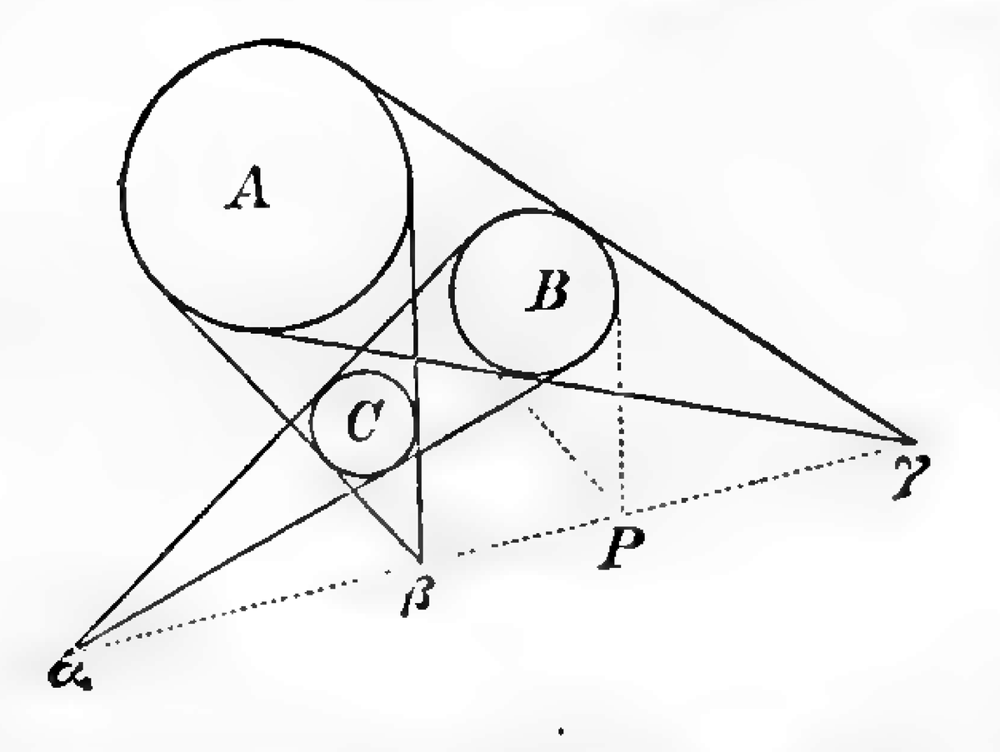

Section 2: Systems of Circles¶
Julius Petersen — Methods and Theories (Authorized Translation by Sophus Haagensen, 1879 · pp. 98–103)
Appendix II — Systems of Circles, Monge’s Theorem & Apollonius’s Problem (pp. 98–103)¶
[pp. 92–95 / 98–103]
Theorem 10 (p. 92): If a circle touches two given circles at \(A\) and \(B\), line \(AB\) passes through the external centre of similitude (for like contacts) or internal centre of similitude (for unlike contacts).
Theorem 11 — Monge’s Theorem (pp. 92–93, Monge): The three external centres of similitude for each pair of three circles lie in one straight line (and likewise any two internal centres with the third external centre).


Problem 403 — Apollonius’s Problem (pp. 94–95, Apollonius, Gergonne): To draw a circle touching three given circles \(A, B, C\). Three distinct solutions are given, culminating in Gergonne’s synthesis (p. 95): join the pole in circle \(A\) of a similitude axis of \((A, B, C)\) to the radical centre of \((A, B, C)\); its intersections with \(A\) give the exact points of contact for pairs of the eight Apollonius circles.
Problem 404 — Elementary Proof of Steiner’s Malfatti Construction (pp. 95–97): In a triangle \(ABC\) to inscribe three circles \(S_a, S_b, S_c\), each touching the other two circles and two sides of the triangle. As promised in the Preface (p. 2), we replace Schröter's inversion proof with an elementary angle-and-chord deduction of Steiner's theorem (the common internal tangent to \(S_a\) and \(S_b\) at their contact \(\gamma\) touches two of the incircles of the sub-triangles formed by the three angle bisectors of \(\triangle ABC\)).